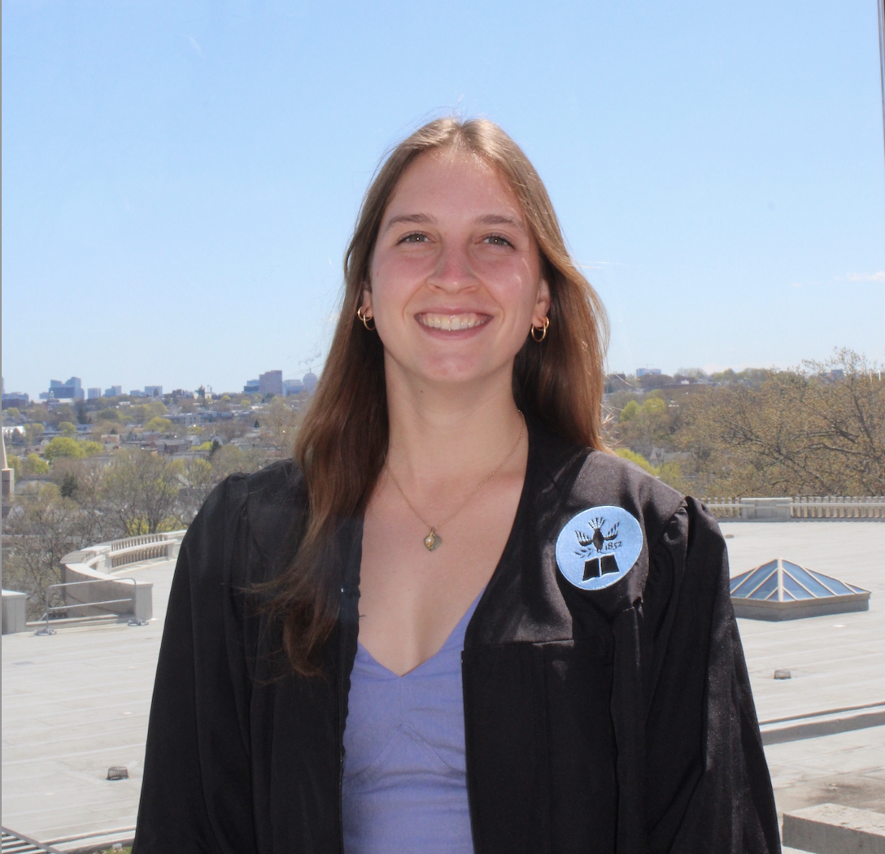
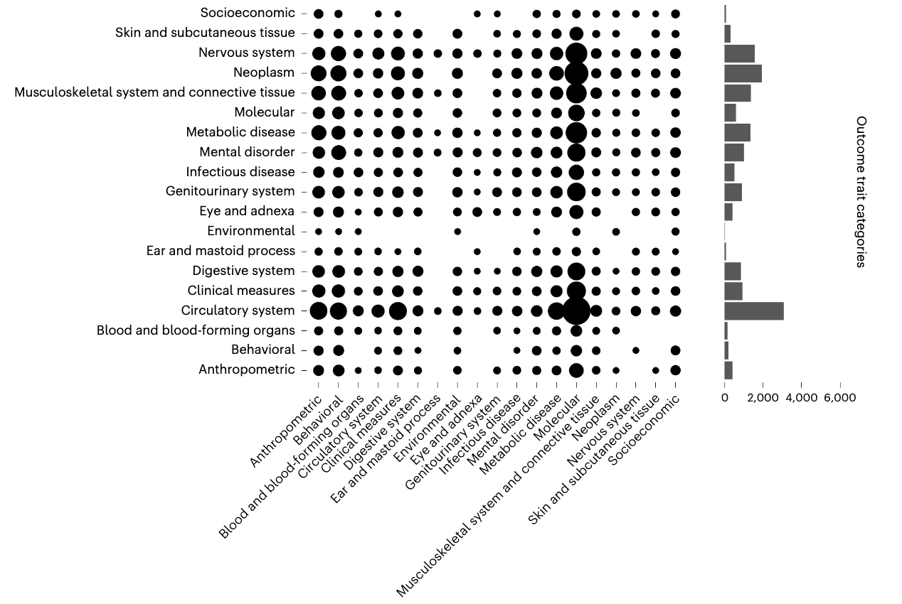
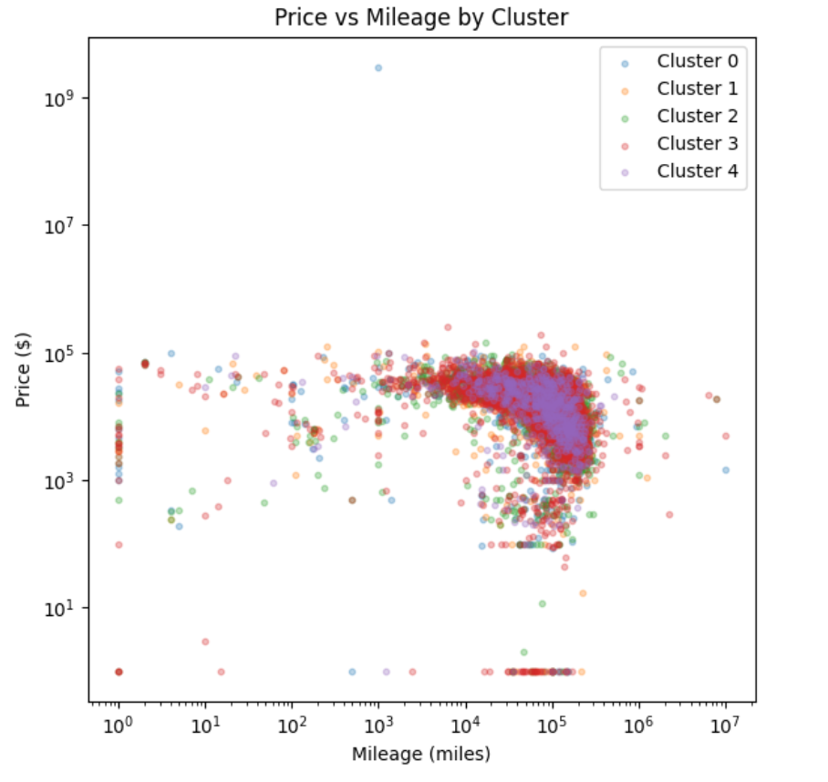
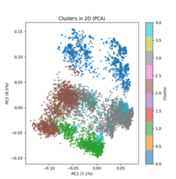

Hello, welcome to my portfolio.
An index of peer-reviewed biomedical manuscripts, empirical data science frameworks, and relational system architectures.

About Me
I am an entry-level Data Scientist and Data Analyst passionate about uncovering actionable insights within highly volatile, high-frequency datasets. Leveraging a strong foundational background spanning predictive modeling, machine learning pipelines, and relational database systems, I am looking for full-time opportunities where I can apply robust statistical frameworks to solve complex, data-driven engineering challenges.
Outside of data science, I am an avid outdoor enthusiast with a deep commitment to endurance athletics. I am big on long-distance running—having competed actively as an athlete throughout college—and am currently training for the upcoming Philadelphia Marathon Weekend. Whether I am exploring mountain trails on a weekend hike, chasing mile splits, or working towards my long-term goal of completing a full Ironman triathlon, I bring the same focus, stamina, and consistency to my professional work as I do to my training.
Selected Research & Manuscripts
Challenges and future directions for Mendelian randomization
Served as a contributing author on this collaborative review examining the evolving methodologies, structural constraints, and causal inference limitations within modern Mendelian randomization (MR) frameworks. Contributed directly to the pre-publication pipeline by coordinating primary data collection workloads and establishing data aggregation protocols. Designed clear, high-impact data visualizations to communicate complex statistical boundaries and causal frameworks effectively for peer-reviewed distribution.

To What Extent Does Market Categorization and Volatility Influence the Degree of Price Inefficiency in Prediction Markets?
This paper investigates the conditions under which decentralized prediction platforms exhibit structural anomalies. Using a real-time live WebSocket pipeline querying high-frequency limit order books from the Polymarket API, a dataset comprising 1,159,154 rows of bid-ask updates tracking 294 asset ecosystems was collected. Shifting the research framework from strict binary arbitrage detection criteria to a continuous variable tracking deviations from pricing parity, we mitigate class evaluation imbalances across multiple platform divisions. By training an optimized 400-tree Stratified Random Forest Regressor framework across high-dimensional volatility metrics, we isolate strong deterministic trends in price discovery, proving that lower liquidity thresholds and staggered information transfer parameters allow pop culture markets to retain significantly higher persistent inefficiency scores.
K-Deep Simplex a Local Dictionary and Sparse Learning Algorithm: Application for Price Prediction of Used Cars
Supervised regression tasks mapping heterogeneous features present unique statistical extraction and downstream interpretability hurdles. This study provides a rigorous quantitative framework benchmarking traditional linear dimension compression models like Principal Component Analysis (PCA) and parts-based Non-Negative Matrix Factorization (NMF) against a state-of-the-art sparse dictionary alternative, K-Deep Simplex (KDS). Evaluated across a parsed dataset of 425,000 tabular vehicle records, we apply k-means clustering strategies to construct local archetype indices alongside Kraemer's algorithm to compute probability vector paths across bounded simplex dimensions. Downstream evaluation using Gradient-Boosting Regressors demonstrates that KDS isolates descriptive, intuitive variable associations without degrading global pricing predictive performance metrics, delivering a superior accuracy-interpretability balance.

Relational Architecture Implementation for High-Concurrency Live Ticketing Systems
This architectural system summary details the structural design of a transactional database schema constructed in PostgreSQL to accurately model highly volatile live event ticketing frameworks. By building complex primary and foreign key mapping dependencies across user lists, artist classifications, capacities, and venue regions, the database implements automated referential data integrity protections. Crucially, the engine programs strict structural isolation limits and conditional triggers via PL/pgSQL procedural definitions to prevent database session locking collisions, manage seat charts dynamically, and enforce multi-session execution thresholds safely.

Interactive Media & Creative Works